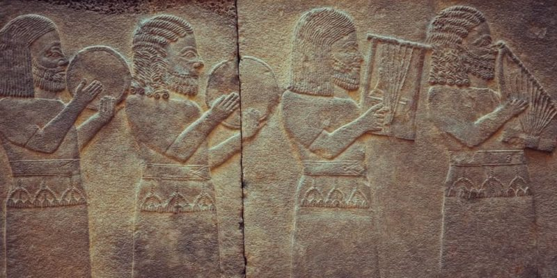

Música
¿Qué es la música?
Por música se entiende el arte de organizar un conjunto de sonidos y silencios de una manera lógica y sensible,conforme a los principios de la armonía, la melodía y el ritmo. Estos principios han cambiado a lo largo del
tiempo, lo que ha permitido diversas manifestaciones y exploraciones artísticas, que tienen en común el deseo
de conmover o producir un efecto estético en quien escucha.La música ha acompañado al hombre desde tiempos
inmemoriales, tanto en sus ritos religiosos como sociales y sirve de vehículo para diversos mensajes culturales,
desde los himnos nacionales hasta las liturgias eclesiásticas.
La música ha acompañado al hombre desde tiempos inmemoriales, tanto en sus ritos religiosos como sociales y sirve
de vehículo para diversos mensajes culturales, desde los himnos nacionales hasta las liturgias eclesiásticas.
Existen muchas y diversas maneras de producir música, algunas muy tradicionales como una orquesta clásica, y otras
más contemporáneas como una banda de rock. Sin embargo, el principio que las guía es similar. Cada una pertenece a un
contexto específico en cuanto a historia, cultura, valores y consideraciones en torno a lo que es y lo que no es el arte.
Origen de la música
En un principio la música estaba vinculada a prácticas religiosas.
El origen de la música se encuentra cubierto de misterio, aunque se estima comenzó en la prehistoria de la humanidad y
se lo vincula con los ritos de apareamiento y con el trabajo colectivo.
Los instrumentos más antiguos son flautas de hueso de más de 30.000 años de antigüedad. Mucho más tarde, en Sumeria
del 3.000 a. C. existían instrumentos primitivos de percusión y de cuerdas. Por su parte, en el Imperio Nuevo del
Antiguo Egipto empleaban escalas de siete sonidos distintos, y diversos instrumentos como el arpa, el oboe y los tambores.
Sin embargo, los primeros tratados sobre la música de Occidente son de origen griego, ya que los antiguos helenos le daban
mucha importancia al valor educativo y moral de la música, vinculada siempre con el poema trágico y la mitología. Su equiva-
lente oriental se encuentra en la Antigua China, cuya música respondía ya en el siglo IV a. C. a una escala cíclica propia.
Historia de la música
La música medieval es principalmente de naturaleza católica.
La vastísima historia de la música suele comprenderse en los siguientes períodos,
al menos en Occidente:
Música prehistórica: Todas las manifestaciones primitivas que el hombre antiguo empleaba de manera ritual y social, como partede sus ceremonias o como inspiración para sus guerras.
Música antigua: Aquella que perteneció a las antiguas civilizaciones (griega, egipcia, mesopotámica, romana o china antigua), cuna
de la sociedad moderna.
Música medieval: La perteneciente a la Edad Media y los siglos en que la Iglesia Católica cristiana controló el pensamiento occidental.
Música renacentista: Característica del Renacimiento de la cultura europea, comenzado en Venecia durante el siglo XV.
Música clásica: También llamada música del Barroco, pertenece a la Europa de los siglos XVII y primera mitad del XVIII. Se divide en
Barroco temprano, Barroco medio y Barroco tardío.
Música clasicista: Es la música de transición entre el estilo barroco y una nueva tendencia más equilibrada en cuanto a estructura y melodía.
Música romántica: La música perteneciente a la época del Romanticismo (final del siglo XVIII hasta mediados del XIX), que abrazó los
valores de nacionalismo, subjetivismo y lirismo de este movimiento artístico contrario a la ilustración.
Características de la música
La música puede definirse a muy grandes rasgos como una sonoridad organizada, coherente, significativa. Se caracteriza porel empleo de los sonidos (y de los instrumentos para producirlos) con el objetivo de producir una secuencia estéticamente
apreciable y significativa.
Como todo sonido, se propaga por el aire (o el medio en el que se inserte) y por lo tanto sus propiedades dependerán de las
condiciones en que se ejecute un instrumento.
Posee un ejecutor o intérprete, que es quien emplea el instrumento musical, pero también un compositor, que es quien concibió
el lenguaje rítmico y sonoro que será luego interpretado en escena. Ambas personas bien pueden ser la misma.
Se compone de cuatro parámetros fundamentales, que son:
La altura: Que no es más que la frecuencia de los sonidos producidos, permitiendo clasificarlos en graves o bajos, y agudos o
altos, dependiendo de cuántos ciclos completen por segundo sus vibraciones.
La duración: O sea, el tiempo en que permanecen vibrando o emitiendo un sonido los instrumentos, lo cual está fuertemente
relacionado con el ritmo.
La intensidad: Que es la fuerza con que se produce un sonido, o la energía que contienen sus ondas sonoras, representado por la
amplitud de onda de las mismas.
El timbre: Que es la cualidad del sonido, determinada por la forma de las ondas que lo componen (en el caso de sonidos complejos,
como los musicales) y es lo que nos permite distinguir a los distintos instrumentos que suenan en una orquesta.
Principios musicales
El ritmo es la capacidad de generar contrastes musicales.
Los principios o fundamentos musicales son:
Melodía: Se llama melodía al orden sucesivo o secuencial de los sonidos y silencios, cuya combinación les otorga identidad propia yreconocible. Equivale a la sintaxis del lenguaje , es decir, al arte de construir una frase bien hecha, y a una concepción horizontal
de la música.
Armonía: La armonía es la capacidad de concordar dos o más sonidos conjuntamente, o de integrarlos de manera agradable a los
que sonarán a continuación. Representa una mirada vertical de la música.
Métrica: Hace alusión a la repetición de intervalos iguales o semejantes de sonidos y silencios a lo largo de una melodía.
Ritmo: Es la capacidad de generar contrastes musicales, empleando los elementos anteriores y las diversas texturas sonoras, tonos,
timbres y variaciones que introduzca el autor.
Notas musicales
La música puede “escribirse” o simplemente pensarse en unidades mínimas de sentido sonoro llamadas notas. La escala tradicional(el “alfabeto musical”) se compone de siete notas ordenadas de la más grave a la más aguda: do, re, mi, fa, sol, la, si.
Éstas pueden emplearse en solitario o en conjunto con las demás, para componer los diversos sonidos requeridos en una ejecución.

Tipos de música
Existen muchas formas de clasificar la música, conforme a su matriz de ritmos, a sus instrumentos empleados, a su origen y procedencia,
o al nivel de complejidad artística que persiguen. En principio podemos hablar de:
Música clásica o académica: Aquella música fruto de las grandes tradiciones musicales occidentales (mayormente europeas) y
sus derivaciones, instrumentales o no, destinadas a la escucha más que al baile.
Música popular: Un género amplio que representa cierto sentir de las masas populares y comprende todos los estilos musicales no
apreciados tradicionalmente por la academia y la crítica erudita.
Música instrumental: Aquella que es ejecutada sin la intervención de la voz humana, es decir, sin canto.
Música vocal: Aquella en la que interviene la voz humana.
Música dramática: Obras musicales en que los cantantes representan también a una serie de personajes en una obra casi teatral,
como la ópera.
Música religiosa: Aquella que acompaña a los ritos eclesiásticos o místicos de una cultura o secta específica.
Música incidental: La música que acompaña producciones audiovisuales de otra naturaleza, como el teatro, la danza o la televisión,
o incluso películas y videojuegos.
Música folclórica o étnica: Aquella vinculada con los valores o sentires de una cultura o una sociedad específica. Este es un término
muy discutido, pues parte de la existencia de una música “universal” y otra “local”, siendo la primera la de las clases mundiales dominantes.
Música dodecafónica: Un tipo de música clásica de vanguardia que intentó romper los parámetros de la música y crear un nuevo lenguaje
para entender esta arte.
Géneros musicales
Los géneros musicales son clasificaciones más o menos estrictas que sirven para orientarnos a la hora de elegir música, especialmente en
ámbitos comerciales o estaciones de radio. Se distinguen entre sí por el uso de algunos instrumentos, por ciertas tendencias estéticas o
por cierto contenido histórico que las acompaña.
Actualmente existen muchos y muy variados géneros musicales. Una lista resumida de los más célebres géneros musicales del momento incluye:
Música Pop: Su nombre proviene de “popular”, en el sentido de “famoso” y no de “tradicional”, y se trata de un género muy comercial de
música bailable, en el que se da prioridad a la voz cantante y se acompaña con patrones rítmicos sencillos. Nació en Estados Unidos en
la década de 1960 y desde entonces ha dominado las listas de ventas en el mundo entero.
El blues: Originalmente consistía en un hombre a solas cantando acompañado con un banjo o una guitarra, allá en el siglo XIX, pero a mediados
del siglo XX se reinventó en el Reino Unido y en otros países, siguiendo un patrón repetitivo en una estructura de doce compases. Su nombre
significa “melancolía” o “tristeza” y muchos de sus mayores exponentes eran norteamericanos de raza negra.
El rap: Otra invención estadounidense, esta vez de a principios de 1970, se trata de un género que combina rima, habla rítmica y jerga,
esta última sobre todo de los barrios pobres negros estadounidenses. Vinculada con ciertas tradiciones orales africanas, el rap emplea
patrones rítmicos muy pronunciados y monótonos (el beat).
El rock: Término empleado para agrupar un conjunto de subgéneros musicales derivados del Rock n’ roll estadounidense de los años 60. Su
instrumento de mayor protagonismo es la guitarra eléctrica, acompañada de bajo, batería y otros instrumentos.
Escritura musical
La música puede “escribirse” mediante una técnica de notación que le permite a un intérprete leerla y ejecutarla sin necesidad de que
esté presente su autor, tal y como se lee un texto literario.
El más empleado de estos sistemas de notación es el gráfico occidental, que consiste en un pentagrama (cinco líneas) sobre el cual se
inscriben las diversas notas mediante signos específicos, ubicados espacialmente de acuerdo a su secuencia, su tiempo y melodía.
Compás musical
Se le llama compás a la regularidad con que aparecen las notas de una misma melodía en el tiempo, vale decir, a su “aceleración”.Una misma melodía puede ejecutarse con un compás más rápido o más lento, sin alterar las notas pero imprimiéndole un ritmo y un
sentir totalmente diferentes.
Importancia de la música

La música es una de las formas artísticas más centrales en la civilización humana, y que permite un mayor grado de autonomía en
su modo de representación, ya que emplea contenido totalmente abstracto (sonidos y eventualmente, palabras). Desde la antigüedad
se ha considerado una de las principales formas artísticas conocidas.
Beneficios de la música
Numerosas investigaciones vinculan la música a beneficios neurológicos, emocionales y psicológicos, llegando incluso a afirmar quela armonía musical tiene impactos positivos en el desarrollo de la vida vegetal y animal.
Vínculos con otras artes
La música ha tenido una relación estrecha con la danza y la dramática, en una búsqueda de integración de ambas formas expresivas.
Su relación con la literatura es más distante, aunque comparten a menudo imaginario, y es usual en otras artes como el cine o el teatro,
a las que sirve de acompañamiento y de generación de una atmósfera.